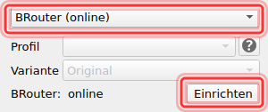
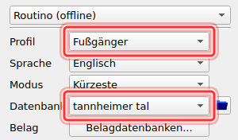

Routing einrichten#
Diese Seite zeigt, wie Sie einen Router einrichten, damit QMapShack einen Track für Sie entlang von Wegen und Straßen zeichnen kann.
Was ein Router macht#
Ein Router berechnet die Strecke entlang von Wegen und Straßen von einem Punkt zum nächsten. Wenn Sie einen Track zeichnen, klicken Sie nur auf die Punkte, durch die der Track führen soll, und der Router ergänzt den Weg dazwischen.
Damit der Router den Weg schon beim Klicken ergänzt, muss er sofort antworten, mit Routingdaten auf Ihrem Computer. Ein Router, der einen Server im Internet fragt, kann das nicht. Er würde bei jedem Klick eine Anfrage schicken, und um Missbrauch zu verhindern, sperren Server Programme, die in kurzer Zeit zu viele Anfragen schicken.
Einen Router auswählen#
QMapShack kann zwei verschiedene Router verwenden, Routino und BRouter. Sie wählen einen in der Liste oben im Bereich Streckenführung aus.
Routino (offline) berechnet Routen mit Daten auf Ihrem Computer. Diese Daten erstellen Sie aus OpenStreetMap-Daten mit Werkzeug → Routino Datenbank erstellen. Die Schritte auf dieser Seite nutzen Routino.
BRouter ist einfacher einzurichten. Als BRouter (online) fragt er den Server von BRouter-Web und kann deshalb nicht sofort antworten. Auf Ihrem Computer installiert, heißt er BRouter (offline) und antwortet dann sofort.
BRouter installieren#

BRouter braucht Java. Installieren Sie Java zuerst: Ohne Java geht der Einrichtungsassistent nicht weiter.
Ein Assistent installiert BRouter für Sie. Wählen Sie BRouter (online) in der Liste aus und klicken Sie auf
Einrichten. Wählen Sie im Assistenten BRouter Einrichtung die Option lokale Installation aus und folgen
Sie den Seiten des Assistenten. Der Assistent lädt BRouter und die Routingdaten für die
Gebiete, die Sie auf seiner Karte auswählen, in das Verzeichnis BRouter Ihres
Hauptverzeichnisses herunter.
Wenn der Assistent fertig ist, zeigt die Liste BRouter (offline).
Routino einrichten#
Routino berechnet Routen mit einer Datenbank, die QMapShack aus OpenStreetMap-Daten erstellt. Dafür brauchen Sie einen
Ausschnitt Ihrer Gegend als .pbf-Datei, zum Beispiel von Geofabrik. Routino kann nicht von einer
Datenbank in eine andere routen, deshalb muss der Ausschnitt jedes Gebiet abdecken, durch das eine Route führt.
Sie können mehrere .pbf-Dateien in einer Datenbank zusammenfassen.
Unter Linux installieren Sie zuerst das Routino-Paket Ihrer Distribution: Das Werkzeug braucht dessen
planetsplitter.
Wählen Sie Routino (offline) in der Liste oben im Bereich Streckenführung aus.
Klicken Sie auf Werkzeug → Routino Datenbank erstellen.
Klicken Sie auf den Knopf mit dem Ordnersymbol neben Quelldateien auswählen und wählen Sie die
.pbf-Dateien aus.Wählen Sie in der Liste Zielpfad aus, wohin die Datenbank kommt. Die Liste bietet die für Routino angemeldeten Verzeichnisse an, darunter das Verzeichnis
RoutinoIhres Hauptverzeichnisses. Der Knopf mit dem Ordnersymbol links von Zielpfad fügt weitere Verzeichnisse hinzu.Geben Sie im Feld Dateipräfix einen Namen für die Datenbank ein.
Klicken Sie auf Starten. Das Erstellen dauert eine Weile. Wenn das Werkzeug !!! erledigt !!! meldet, erscheint die Datenbank unter Datenbank im Bereich Streckenführung.

Wählen Sie die Datenbank unter Datenbank aus. Wählen Sie unter Profil aus, wie Sie unterwegs sind, zum Beispiel Fußgänger oder Fahrrad.
Eine anderswo erstellte Datenbank besteht aus vier Dateien: <name>-nodes.mem, <name>-segments.mem,
<name>-ways.mem und <name>-relations.mem. Kopieren Sie sie direkt in das Verzeichnis Routino, nicht in ein
Unterverzeichnis. Nach einigen Sekunden erscheint die Datenbank unter Datenbank. Sie heißt wie ihre Dateien, mit
Leerzeichen statt Unterstrichen: Die Dateien tannheimer_tal-*.mem stehen in der Liste als tannheimer tal.